▶ วิดีโอสอน: ประมูลและทำราคา
งานประมูลราชการ: Factor F, ปร.4, ปร.5
อยู่ที่ฝ่ายธุรกิจขายงานประมูล
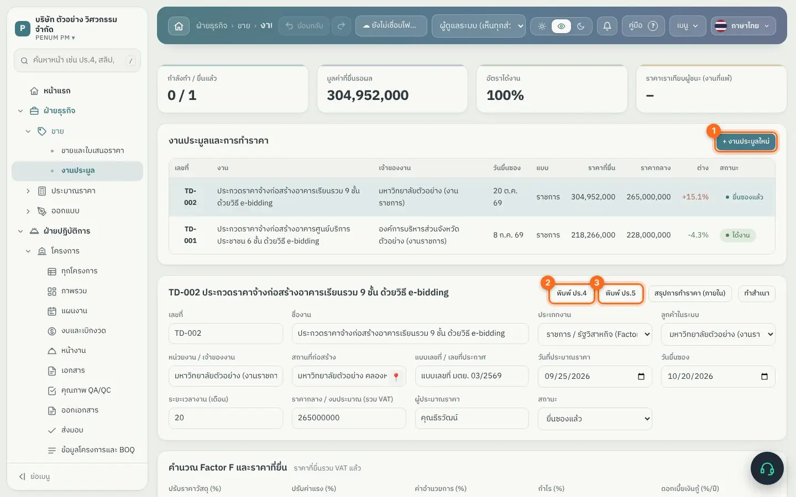
ทะเบียนงานประมูล- 1
กด + งานประมูลใหม่ (1)
- 2
เลือกประเภทงาน: ราชการ / รัฐวิสาหกิจ (Factor F) หรือ เอกชน (บวกกำไร + VAT)
- 3
กรอกหน่วยงาน สถานที่ เลขที่ประกาศ วันยื่นซอง ระยะเวลางาน ราคากลาง และผู้ประมาณราคา
- 4
ใส่รายการปริมาณงานและราคาต้นทุน (วางจาก Excel ได้)
- 5
ตรวจส่วน คำนวณ Factor F และราคาที่ยื่น แล้วกด พิมพ์ ปร.4 (2) และ พิมพ์ ปร.5 (3)
- 6
เปลี่ยนสถานะ: กำลังทำราคา › ยื่นซองแล้ว › ได้งาน / ไม่ได้งาน
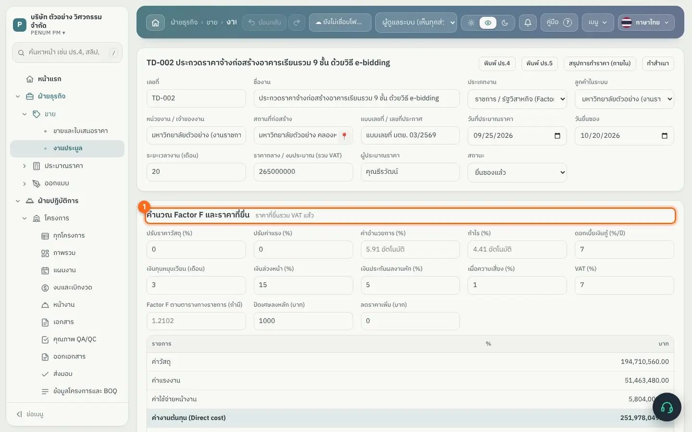
ส่วนคำนวณ Factor F และราคาที่ยื่น- กรอกค่าอำนวยการ กำไร ดอกเบี้ย เงินล่วงหน้า เงินประกันผลงาน เผื่อความเสี่ยง และ VAT โปรแกรมคำนวณ Factor F ให้
- ถ้ามี Factor F จากตารางทางราชการ ใส่ในช่อง Factor F ตามตารางทางราชการ ได้เลย
- การ์ด เทียบราคาวัสดุกับกระทรวงพาณิชย์ ในหน้านี้ รับตารางราคาวัสดุที่คัดลอกจากเว็บ สนค. (index.tpso.go.th) มาวางเทียบกับราคาที่ใช้
- การ์ด ราคาจากคลังราคากลาง ใส่ค่าวัสดุและค่าแรงต่อหน่วยจากคลังของบริษัทให้ทุกบรรทัดที่จับคู่ได้ (บทที่ 6)
- ปุ่ม สรุปการทำราคา (ภายใน) พิมพ์สรุปให้ผู้บริหารดู ปุ่ม ทำสำเนา ใช้เริ่มงานประมูลใหม่จากงานเดิม
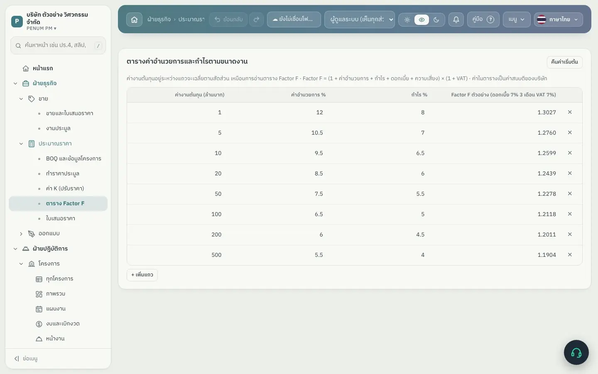
ตารางค่าอำนวยการและกำไรตามขนาดงาน (ค่าของบริษัท แก้ได้)ตาราง Factor F อยู่ที่ ฝ่ายธุรกิจ › ประมาณราคา › ตาราง Factor F ค่าที่ให้มาเป็นค่าสมมติ บริษัทควรแก้ให้ตรงนโยบายของตัวเอง กด คืนค่าเริ่มต้น เพื่อกลับไปค่าเดิม
ค่า K (เงินปรับราคา)
อยู่ที่ฝ่ายธุรกิจประมาณราคาค่า K (ปรับราคา)
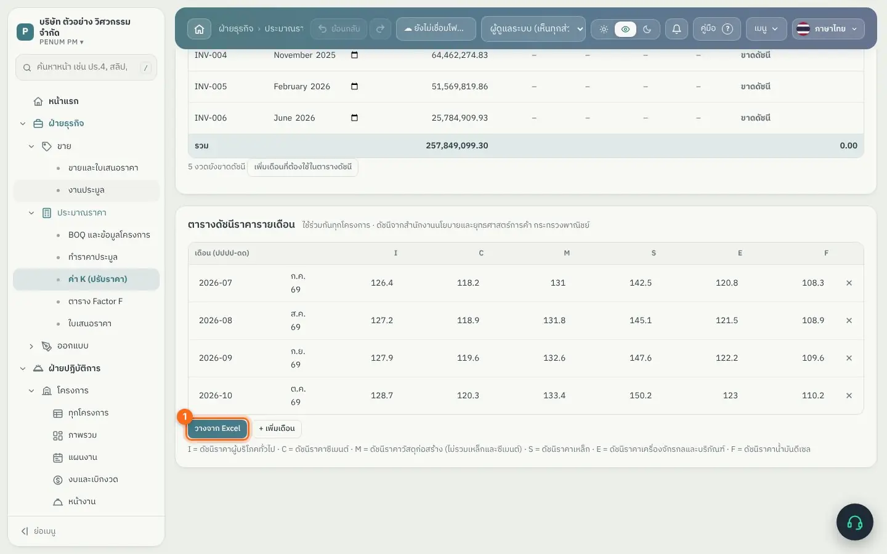
คำนวณค่า K ต่องวด และตารางดัชนีราคารายเดือน- 1
เลือก โครงการ และ สูตร (เช่น งานอาคาร) ใส่ เดือนที่เปิดซอง (Io)
- 2
เติมดัชนีในตาราง ดัชนีราคารายเดือน ด้านล่าง: คัดลอกตารางดัชนีจากเว็บกระทรวงพาณิชย์แล้วกด วางจาก Excel (1) หรือกด + เพิ่มเดือน
- 3
โปรแกรมคำนวณ K ของแต่ละงวด และเงินเพิ่ม/ลดเฉพาะส่วนที่เกิน 4%
- 4
กด พิมพ์การคำนวณค่า K เพื่อแนบเรื่องเบิก
รู้ไว้ตารางดัชนีใช้ร่วมกันทุกโครงการ เติมครั้งเดียวใช้ได้ทุกงาน
คลังราคากลางคืออะไร
อยู่ที่ฝ่ายธุรกิจประมาณราคาคลังราคากลาง
คลังราคากลางคือรายการราคาต่อหน่วยของบริษัท เช่น สายไฟ THW 1×2.5 ตร.มม. ราคาเมตรละเท่าไร ค่าแรงเท่าไร ทั้ง PENUM PM, PENUM MEP และ PENUM BIM อ่านจากที่เดียวกัน แก้ราคาที่ไหน อีกสองโปรแกรมก็ได้ราคาใหม่ด้วย
ราคากลางงานราชการดึงราคาเข้า BOQ แล้วพิมพ์ ปร.4 ปร.5 ปร.6 (หัวข้อ 6.8)
ใบเสนอราคาเอกชนดึงราคาทุน แล้วบวกกำไรตามที่ตั้งไว้ (หัวข้อ 6.9)
BOQ จาก MEP / BIMออกแบบเสร็จ ราคาจากคลังคิดยอดให้ (หัวข้อ 6.10)
ต่อราคาร้านค้าวางใบราคาร้านค้า เทียบกับราคาทางการ (หัวข้อ 6.6–6.7)
- 1
ใน PENUM PM ที่เมนูซ้าย กด ฝ่ายธุรกิจ › ประมาณราคา › คลังราคากลาง (หรือกด / แล้วพิมพ์ “คลังราคา”)
- 2
ใน PENUM MEP หรือ BIM กด เมนู มุมขวาบน › คลังราคากลาง (หัวข้อ 6.10)
รู้ไว้ราคาทุกบรรทัดในคลังไม่รวม VAT และแยกค่าวัสดุกับค่าแรงเสมอ เมื่อราคาของบรรทัดไหนเปลี่ยน ราคาเดิมจะเก็บไว้ในประวัติ กลับไปใช้ราคาเดิมได้ทุกเมื่อ
ใส่ราคากลางชุดเริ่มต้น
อยู่ที่ฝ่ายธุรกิจประมาณราคาคลังราคากลาง
ครั้งแรกที่เปิด คลังจะว่าง โปรแกรมมีราคากลางงานระบบติดมาให้ 212 รายการ (ไฟฟ้า สุขาภิบาล ดับเพลิง แจ้งเหตุเพลิงไหม้ สื่อสาร ท่อน้ำยา ท่อลม น้ำเย็น แอร์ เครื่องกำเนิดไฟฟ้า โซลาร์เซลล์) กดปุ่มเดียวก็ใช้งานได้
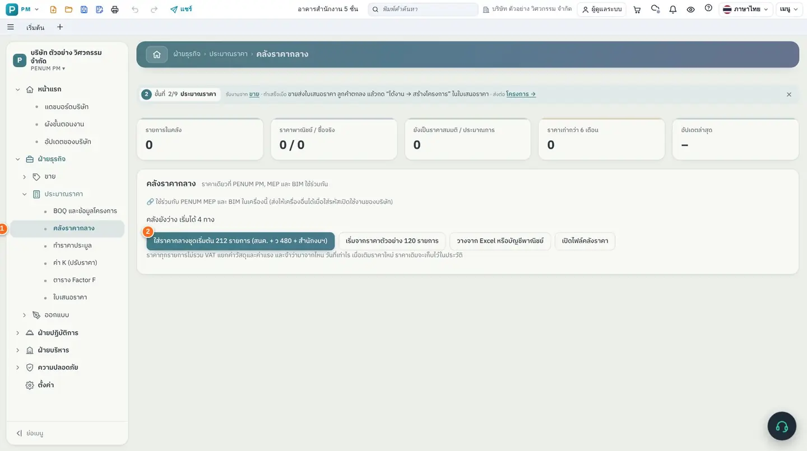
คลังว่าง เลข 1 คือเมนู คลังราคากลาง เลข 2 คือปุ่มใส่ราคากลางชุดเริ่มต้น- 1
เปิดหน้า คลังราคากลาง (1)
- 2
กด ใส่ราคากลางชุดเริ่มต้น 212 รายการ (สนค. + ว 480 + สำนักงบฯ) (2)
- 3
รอข้อความด้านล่าง “ราคากลางชุดเริ่มต้น: เพิ่ม 212” แล้วตารางราคาจะขึ้นทันที
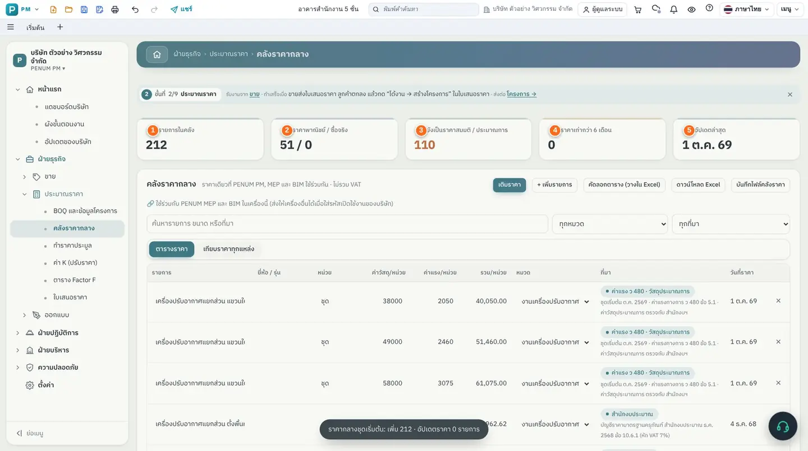
หลังใส่ชุดเริ่มต้น ตัวเลขด้านบนบอกสภาพของคลัง| เลข | ตัวเลข | หมายความว่า |
|---|
| 1 | รายการในคลัง | จำนวนบรรทัดราคาทั้งหมด |
| 2 | ราคาพาณิชย์ / ซื้อจริง | บรรทัดที่ค่าวัสดุเป็นราคาทางการของกระทรวงพาณิชย์ (สนค.) / บรรทัดที่ได้ราคาจากใบสั่งซื้อจริงของบริษัท |
| 3 | ยังเป็นราคาสมมติ / ประมาณการ | บรรทัดที่ยังมีค่าวัสดุหรือค่าแรงเป็นตัวเลขประมาณการ ตัวเลขนี้ควรลดลงเรื่อย ๆ เมื่อวางราคาจริงเข้ามา |
| 4 | ราคาเก่ากว่า 6 เดือน | บรรทัดที่ควรหาราคาใหม่ (บัญชีรายปีของสำนักงบประมาณและค่าแรง ว 480 นับเก่าเมื่อครบ 1 ปี) |
| 5 | อัปเดตล่าสุด | วันที่ของราคาที่ใหม่ที่สุดในคลัง |
เคล็ดลับกดใส่ชุดเริ่มต้นซ้ำได้ บรรทัดที่บริษัทแก้ราคาเองแล้วจะไม่ถูกทับ ราคาจากชุดเริ่มต้นจะไปอยู่ในหน้า เทียบราคาทุกแหล่ง แทน
ราคามาจากไหน และเมื่อไรควรอัปเดต
ทุกบรรทัดมีป้ายในช่อง ที่มา บอกว่าราคาบรรทัดนั้นเชื่อได้แค่ไหน และข้อความเล็กใต้ป้ายบอกแหล่งเต็ม เช่น รหัสสินค้า สนค. หรือข้อของ ว 480 ใช้ช่อง ทุกที่มา เพื่อดูเฉพาะแหล่งเดียว
| ป้าย | หมายความว่า | ในชุดเริ่มต้น | ควรอัปเดต |
|---|
| ราคาทางการ สนค. + ว 480 | ค่าวัสดุจากราคาวัสดุก่อสร้างส่วนกลางของ สนค. กระทรวงพาณิชย์ และค่าแรงตามบัญชีค่าแรงกรมบัญชีกลาง ว 480 (26 มิ.ย. 2569) | 49 | ทุกเดือน |
| ค่าวัสดุ สนค. · ค่าแรงประมาณการ | ค่าวัสดุทางการ สนค. แต่ ว 480 ไม่มีค่าแรงรายการนี้ | 2 | ทุกเดือน |
| สำนักงบประมาณ | ราคาทั้งบรรทัดจากบัญชีราคามาตรฐานครุภัณฑ์ สำนักงบประมาณ ธ.ค. 2568 ฉบับปรับปรุง ก.พ. 2569 และเพิ่มเติม เม.ย. 2569 หัก VAT 7% แล้ว (แอร์ เครื่องกำเนิดไฟฟ้า โซลาร์รูฟท็อป) | 51 | ปีละครั้ง |
| สำนักงบฯ (คำนวณต่อ TR/kVA) | ราคา Split ต่อ TR และเครื่องกำเนิดไฟฟ้าต่อ kVA ที่ PENUM MEP ใช้ออกแบบ คำนวณจากราคาสำนักงบฯ | 2 | ปีละครั้ง |
| ค่าแรง ว 480 · วัสดุประมาณการ | ค่าแรงทางการ ว 480 แต่ค่าวัสดุยังเป็นประมาณการ เพราะบัญชี สนค. ไม่มีรายการนี้ (เช่น ท่อ EMT/IMC ท่อทองแดง ท่อเหล็กดำ Sch.40 หัวสปริงเกอร์ อุปกรณ์แจ้งเหตุ สุขภัณฑ์) | 71 | ปีละครั้ง (ค่าแรง) |
| ประมาณการ | ราคาประมาณการของ PENUM ต.ค. 2569 ทั้งค่าวัสดุและค่าแรง ควรวางราคาจริงทับก่อนยื่นงานราชการ | 37 | เมื่อได้ราคาจริง |
| พาณิชย์ | ค่าวัสดุจากบัญชีราคา สนค. ที่บริษัทวางหรือค้นใส่เอง (หัวข้อ 6.4) | – | ทุกเดือน |
| ผู้แทนจำหน่าย · ใบเสนอราคาผู้ขาย · ซื้อจริง | ราคาจาก price list ผู้แทนจำหน่าย ใบเสนอราคาร้านค้า หรือใบสั่งซื้อ (PO) ของบริษัทเอง (หัวข้อ 6.6) | – | ทุก 6 เดือน |
| แก้เอง | ราคาที่พิมพ์แก้ในตาราง | – | – |
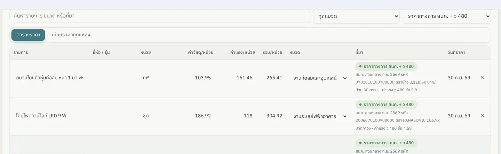
ราคาทางการ สนค. + ว 480 ข้อความใต้ป้ายบอกรหัสสินค้า สนค. ราคาต่อม้วนหรือต่อท่อน และข้อของ ว 480" loading="lazy">กรอง ราคาทางการ สนค. + ว 480 ข้อความใต้ป้ายบอกรหัสสินค้า สนค. ราคาต่อม้วนหรือต่อท่อน และข้อของ ว 480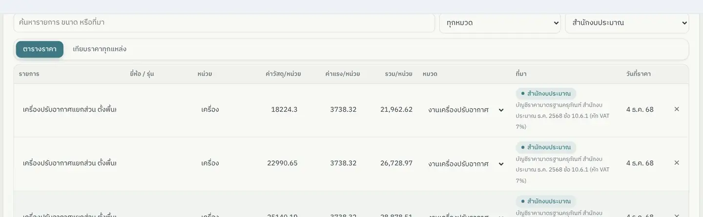
สำนักงบประมาณ แอร์แต่ละขนาดเป็นราคาทั้งเครื่อง ค่าติดตั้งแยกในช่องค่าแรง" loading="lazy">กรอง สำนักงบประมาณ แอร์แต่ละขนาดเป็นราคาทั้งเครื่อง ค่าติดตั้งแยกในช่องค่าแรง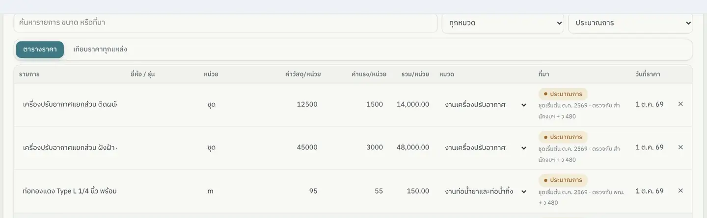
ประมาณการ รายการกลุ่มนี้ควรหาราคาจริงมาแทนก่อนยื่นงาน" loading="lazy">กรอง ประมาณการ รายการกลุ่มนี้ควรหาราคาจริงมาแทนก่อนยื่นงานรู้ไว้สนค. ขายสายไฟเป็นม้วน 100 ม. ท่อเป็นท่อน 4–6 ม. และฉนวนเป็นม้วนตามพื้นที่ คลังเก็บเป็นราคาต่อเมตรหรือต่อตารางเมตรที่หารแล้ว เช่น สาย THW 1×2.5 ตราบางกอกเคเบิ้ล 1,526.52 บาท/ม้วน 100 ม. = 15.27 บาท/ม. ในชุดเริ่มต้นเลือกตราที่ราคาต่ำที่สุดในบัญชี
การ์ด อัปเดตราคาล่าสุดของแต่ละแหล่ง ใต้ตารางบอกว่าแต่ละแหล่งอัปเดตครั้งล่าสุดเมื่อไร และครบกำหนดเมื่อไร เมื่อถึงกำหนด การ์ดจะย้ายขึ้นไปอยู่เหนือตาราง และหน้า ต้องดูวันนี้ จะเตือนด้วย ไม่ต้องอัปเดตทุกวันหรือทุกสัปดาห์ สนค. ออกราคาเดือนละครั้ง ส่วนสำนักงบประมาณและกรมบัญชีกลางออกปีละครั้ง
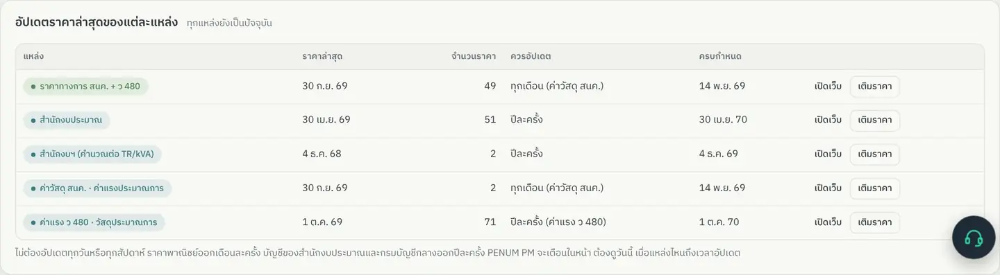
เปิดเว็บ เพื่อไปเว็บของแหล่งนั้น หรือ เติมราคา เพื่อวางราคาใหม่" loading="lazy">ราคา สนค. ก.ย. 2569 ครบกำหนดอัปเดต 14 พ.ย. 2569 ส่วนบัญชีรายปีครบกำหนดปีหน้า กด เปิดเว็บ เพื่อไปเว็บของแหล่งนั้น หรือ เติมราคา เพื่อวางราคาใหม่อัปเดตราคา สนค. ทุกเดือน
อยู่ที่คลังราคากลางเติมราคาบัญชีราคากระทรวงพาณิชย์
ราคาวัสดุก่อสร้างของ สนค. (สำนักงานนโยบายและยุทธศาสตร์การค้า กระทรวงพาณิชย์) ออกใหม่ทุกเดือน ดาวน์โหลดเป็นไฟล์ Excel แล้ววางเข้าโปรแกรม ราคาวัสดุใน 51 บรรทัดที่มาจาก สนค. จะเปลี่ยนเป็นเดือนใหม่ทั้งหมด ค่าแรงคงเดิม ใช้เวลาประมาณ 3 นาที
ระวังต้องใช้ PENUM PM 4.71 ขึ้นไป ถ้ายังเป็นรุ่นเก่า กด เมนู › อัปเดตโปรแกรม ก่อน
ขั้นที่ 1: ดาวน์โหลดไฟล์จากเว็บ สนค.
- 1
เปิด index.tpso.go.th/construction-material-prices (หรือค้น Google ว่า “สนค ราคาวัสดุก่อสร้าง รายเดือน”)
- 2
กด ราคาวัสดุก่อสร้างรายจังหวัด แล้วกดลูกศร → ที่แถว ส่วนกลาง (กรุงเทพฯ นนทบุรี ปทุมธานี สมุทรปราการ) หรือจังหวัดที่ทำงาน
- 3
ไปแท็บ ราคาวัสดุก่อสร้าง ที่ เงื่อนไขช่วงเวลา เลือก เดือน และเดือนล่าสุด
- 4
กด ดาวน์โหลดข้อมูล มุมขวาบน แล้วเลือก Excel
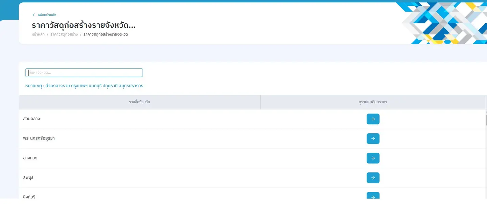
เว็บ สนค. หน้าราคาวัสดุก่อสร้างรายจังหวัด กดลูกศรที่แถว ส่วนกลาง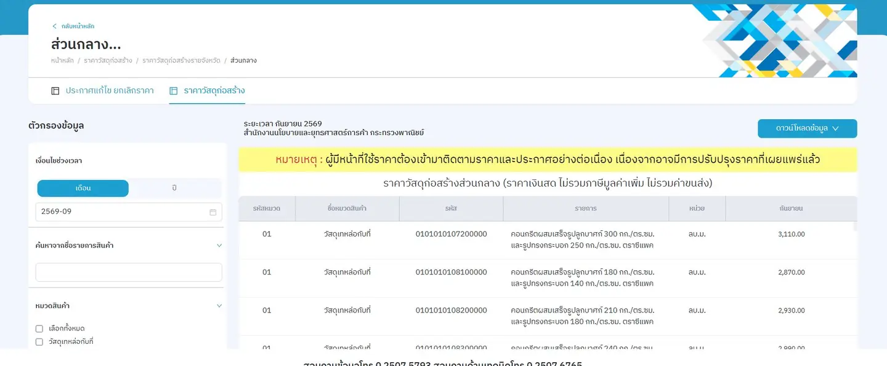
เลือกเดือนทางซ้าย แล้วกด ดาวน์โหลดข้อมูล ทางขวาบน ไฟล์มีคอลัมน์ รหัสหมวด · ชื่อหมวดสินค้า · รหัส · รายการ · หน่วย · ราคาเดือนนั้นขั้นที่ 2: วางไฟล์เข้า PENUM PM
- 1
เปิดไฟล์ Excel ที่ดาวน์โหลด กด Ctrl+A เพื่อเลือกทั้งแผ่น แล้วกด Ctrl+C (แถวหัวเรื่องด้านบนติดมาด้วยได้ โปรแกรมข้ามให้เอง)
- 2
หน้าคลังราคากลาง กด เติมราคา แล้วที่การ์ด บัญชีราคากระทรวงพาณิชย์ กด วางบัญชีใหม่จาก Excel (3)
- 3
ช่อง จังหวัด ใส่ ส่วนกลาง ช่อง เดือนของราคา เลือกเดือนของไฟล์ แล้วคลิกในกล่องใหญ่ กด Ctrl+V
- 4
กด นำเข้า โปรแกรมจะกลับมาหน้าต่างเติมราคา โดยเลือกบัญชีที่เพิ่งวางไว้ให้แล้ว
- 5
ปล่อยช่อง เพิ่มรายการที่ยังไม่มีในคลังด้วย ไว้ไม่ติ๊ก (บัญชีทั้งชุดมีกว่า 5,000 รายการ โปรแกรมเอาติ๊กออกให้เอง) แล้วกด ใช้บัญชีนี้
- 6
ข้อความด้านล่างบอกผล เช่น “อัปเดตราคา 51 รายการ” ถ้าวางเดือนเดิมซ้ำจะขึ้นว่า “ไม่มีรายการใหม่หรือราคาที่เปลี่ยน”
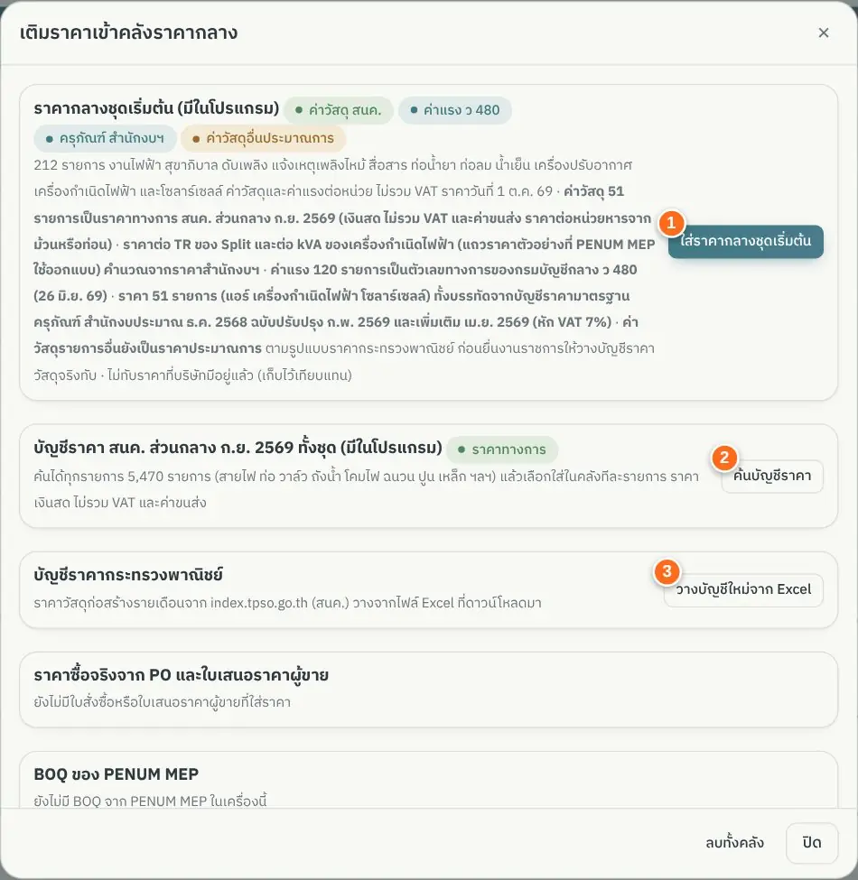
หน้าต่างเติมราคา 1 ราคากลางชุดเริ่มต้น 2 ค้นบัญชีราคา สนค. ทั้งชุด 3 วางบัญชีใหม่จาก Excel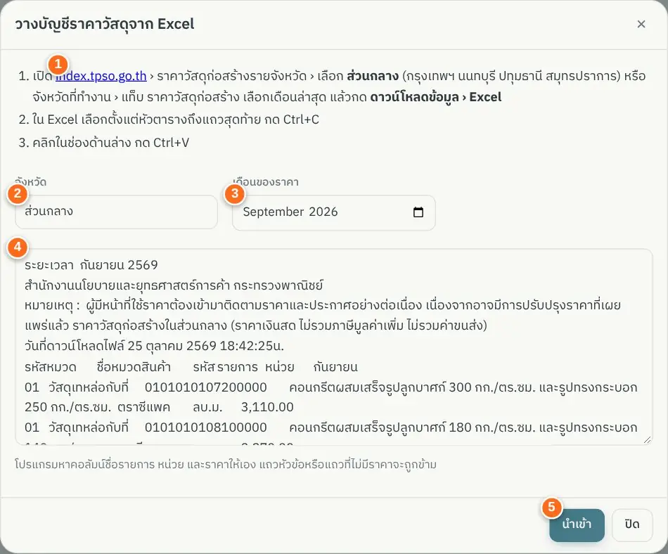
วางไฟล์ สนค. ทั้งแผ่น 1 ลิงก์ไปเว็บ สนค. 2 จังหวัด 3 เดือนของราคา 4 กล่องวาง 5 นำเข้า- โปรแกรมจับคู่ด้วย รหัสสินค้า สนค. จึงไม่พลาดแม้ชื่อในคลังกับชื่อในบัญชีไม่เหมือนกัน และหารราคาต่อม้วนหรือต่อท่อนเป็นต่อเมตรให้เหมือนเดิม
- บรรทัดที่บริษัทแก้ราคาเองหรือเลือกปักหมุด 📌 ไว้ จะไม่ถูกเปลี่ยน ราคา สนค. เดือนใหม่ไปอยู่ในหน้า เทียบราคาทุกแหล่ง ให้เลือกเอง
- ราคาเดิมของทุกบรรทัดที่เปลี่ยนอยู่ในปุ่ม ประวัติ
ใส่รายการอื่นจากบัญชี สนค. ทีละรายการ
ถ้าต้องการวัสดุที่ชุดเริ่มต้นไม่มี เช่น สายไฟอีกยี่ห้อ ถังน้ำ ฉนวน ให้ค้นจากบัญชี สนค. ส่วนกลาง ก.ย. 2569 ทั้งชุด 5,470 รายการที่มีในโปรแกรม
- 1
เติมราคา › การ์ด บัญชีราคา สนค. ส่วนกลาง ก.ย. 2569 ทั้งชุด › ค้นบัญชีราคา
- 2
พิมพ์คำค้น เช่น THW 1 x 2.5 หรือรหัสสินค้า เลือกหมวดเพื่อให้แคบลงได้
- 3
กด ใส่ในคลัง ที่รายการที่ต้องการ สายไฟเป็นม้วนและท่อเป็นท่อนจะใส่เป็นราคาต่อเมตรให้ (ดูคอลัมน์ ต่อเมตร)
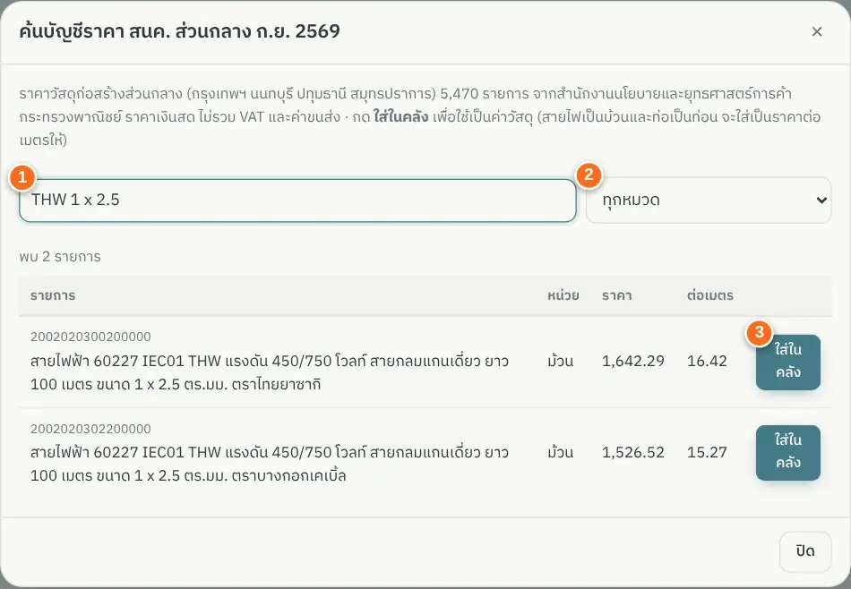
ค้น THW 1 x 2.5 ได้ 2 ยี่ห้อ ราคาต่อม้วน 100 ม. และต่อเมตรรายการที่ใส่ด้วยวิธีนี้จำรหัส สนค. ไว้ เดือนต่อไปที่วางไฟล์ใหม่ ราคาก็อัปเดตตามไปด้วย
หน้าตารางราคาและการแก้ราคา
อยู่ที่ฝ่ายธุรกิจประมาณราคาคลังราคากลางแท็บ ตารางราคา
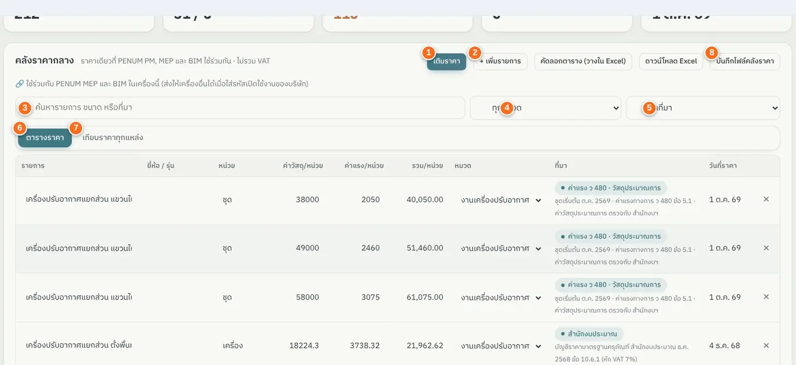
ปุ่มและช่องค้นหาของหน้าคลังราคากลาง| เลข | ปุ่ม / ช่อง | ใช้ทำอะไร |
|---|
| 1 | เติมราคา | เปิดหน้าต่างรวมทุกวิธีเติมราคา (ชุดเริ่มต้น บัญชี สนค. ราคาซื้อจริงจาก PO และใบเสนอราคาผู้ขาย BOQ จาก PENUM MEP วางตารางจาก Excel ไฟล์คลังราคา) |
| 2 | + เพิ่มรายการ | เพิ่มบรรทัดใหม่ว่าง ๆ ไว้บนสุด พิมพ์ชื่อ หน่วย ค่าวัสดุ ค่าแรง |
| 3 | ค้นหา | พิมพ์ชื่อ ขนาด หรือที่มา เช่น THW, 2 นิ้ว, ว 480 |
| 4 | ทุกหมวด | ดูเฉพาะหมวดงาน หรือเลือก เฉพาะราคาเก่ากว่า 6 เดือน |
| 5 | ทุกที่มา | ดูเฉพาะแหล่งเดียว (หัวข้อ 6.3) |
| 6 | ตารางราคา | ราคาที่ใช้อยู่ของทุกบรรทัด แก้ได้ในตาราง |
| 7 | เทียบราคาทุกแหล่ง | ราคาจากหลายแหล่งของบรรทัดเดียวกันวางเทียบกัน (หัวข้อ 6.7) |
| 8 | บันทึกไฟล์คลังราคา | เก็บคลังเป็นไฟล์ .json ไว้สำรองหรือส่งต่อ ปุ่ม คัดลอกตาราง และ ดาวน์โหลด Excel อยู่ข้าง ๆ |
- 1
ค้นบรรทัดที่ต้องการ คลิกช่อง ค่าวัสดุ/หน่วย หรือ ค่าแรง/หน่วย พิมพ์ราคาใหม่ แล้วกด Tab หรือคลิกที่อื่น
- 2
ป้ายที่มาเปลี่ยนเป็น แก้เอง พร้อม 📌 แปลว่าบริษัทเลือกราคานี้เอง ราคาที่เติมเข้ามาภายหลังจะไปอยู่ในหน้าเทียบราคา ไม่ทับราคานี้
- 3
กด ประวัติ เพื่อดูราคาเดิม และกด กลับไปใช้ราคาก่อนหน้า ถ้าแก้ผิด
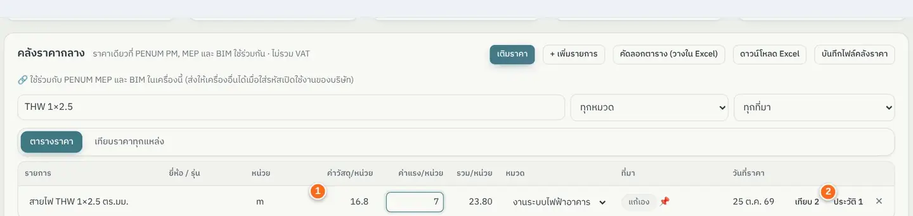
1 แก้ค่าวัสดุเป็น 16.80 2 ปุ่มประวัติ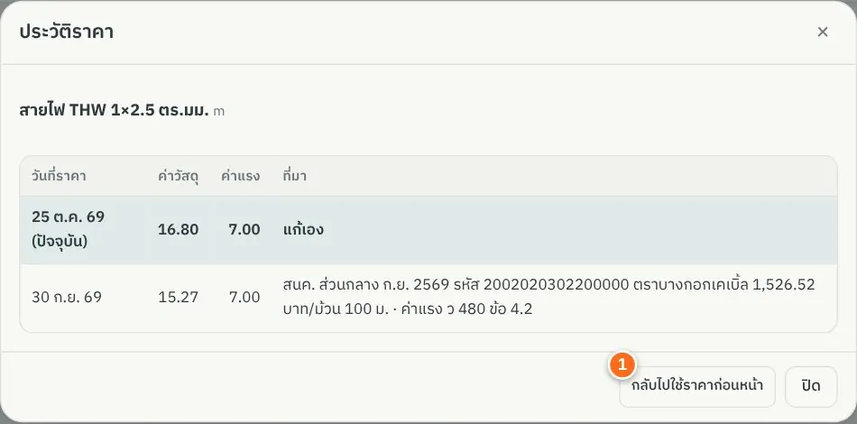
ประวัติราคา บรรทัดบนคือราคาที่ใช้อยู่ บรรทัดล่างคือราคา สนค. เดิม กดปุ่ม 1 เพื่อกลับไปใช้- ลบบรรทัดด้วยปุ่ม × ท้ายแถว ลบผิดกด ↶ ย้อนกลับ (Ctrl+Z)
- เปลี่ยนหมวดของบรรทัดได้ที่ช่อง หมวด หมวดนี้ใช้จัดกลุ่มใน ปร.4
วางราคาร้านค้า / ผู้แทนจำหน่าย
อยู่ที่คลังราคากลางเติมราคาวางตารางราคาจาก Excel หรือแหล่งอื่น
ใบราคาจากร้านค้า ดีลเลอร์ หรือผู้ผลิต วางเข้าคลังได้จากตาราง Excel ใดก็ได้ แต่ละแหล่งจะเก็บแยกไว้เทียบกัน
- 1
ใน Excel จัดให้มีคอลัมน์ รายการ · หน่วย · ราคา (ถ้ามีค่าแรงหรือยี่ห้อ ให้ใส่หัวคอลัมน์ ค่าวัสดุ ค่าแรง ยี่ห้อ) เลือกตั้งแต่หัวตาราง กด Ctrl+C
- 2
กด เติมราคา เลื่อนลงไปที่การ์ด วางตารางราคาจาก Excel หรือแหล่งอื่น
- 3
เลือกชนิดแหล่ง ใส่ชื่อแหล่ง และวันที่ของราคา (1–3)
- 4
คลิกในกล่อง กด Ctrl+V (4)
- 5
ถ้าราคาในใบรวม VAT แล้ว ติ๊ก ราคารวม VAT แล้ว (หัก 7% ออก) (5) ถ้าตัวเลขเป็นค่าแรงล้วน ติ๊ก ตัวเลขในตารางเป็นค่าแรง
- 6
กด นำเข้า (6)
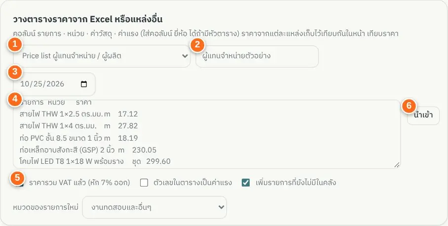
วางราคาของผู้แทนจำหน่ายตัวอย่าง 5 รายการ ราคารวม VAT| ชนิดแหล่งที่เลือกได้ | ใช้เมื่อ |
|---|
| ตาราง Excel ทั่วไป | ตารางราคาของบริษัทเอง |
| Price list ผู้แทนจำหน่าย / ผู้ผลิต | ใบราคาจากดีลเลอร์ เช่น Daikin ม.ค. 2570 |
| ใบเสนอราคาผู้ขาย | ใบเสนอราคาที่ร้านค้าส่งมาสำหรับงานหนึ่ง |
| บัญชีราคามาตรฐานครุภัณฑ์ (สำนักงบประมาณ) | บัญชีปีใหม่ของสำนักงบฯ (ติ๊ก VAT ให้เอง) |
| บัญชีค่าแรงงาน (กรมบัญชีกลาง) | บัญชีค่าแรงฉบับใหม่ (ติ๊ก ค่าแรง ให้เอง) |
| ราคากลาง / ราคาที่ชนะประมูล (e-GP) | ราคาจากประกาศในระบบ e-GP |
| ร้านค้าออนไลน์ | ราคาจาก HomePro ไทวัสดุ Global House (ติ๊ก VAT ให้เอง) |
ระวังบรรทัดที่ยังไม่ได้ปักหมุด จะเปลี่ยนไปใช้ราคาที่วางเข้ามาล่าสุด ราคาเดิมยังอยู่ครบในหน้าเทียบราคา ถ้าเป็นงานราชการที่ต้องใช้ราคาทางการ ให้เข้าแท็บ เทียบราคาทุกแหล่ง แล้วกดเลือกราคา สนค. กลับมา (หัวข้อ 6.7) ราคาที่เลือกจะติด 📌 และไม่ถูกทับอีก
ราคาซื้อจริงจากใบสั่งซื้อ (PO) และราคาจากใบเสนอราคาผู้ขายในใบขอซื้อ (PR) ของทุกโครงการ ดึงเข้าคลังได้ที่การ์ด ราคาซื้อจริงจาก PO และใบเสนอราคาผู้ขาย › ดึงราคา ในหน้าต่างเติมราคาเดียวกัน
เทียบราคาทุกแหล่ง
อยู่ที่ฝ่ายธุรกิจประมาณราคาคลังราคากลางแท็บ เทียบราคาทุกแหล่ง
แท็บนี้วางราคาจากทุกแหล่งของบรรทัดเดียวกันเป็นคอลัมน์ เห็นทันทีว่าร้านไหนแพงกว่าราคาทางการกี่เปอร์เซ็นต์ และเลือกได้ว่าคลังจะใช้ราคาไหน
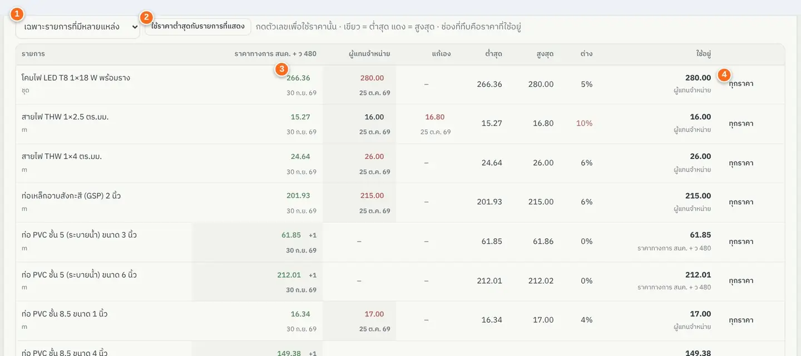
ราคาสีเขียว = ต่ำสุด สีแดง = สูงสุด ช่องที่พื้นทึบคือราคาที่ใช้อยู่ คอลัมน์ ต่าง คือส่วนต่างระหว่างราคาต่ำสุดกับสูงสุด| เลข | ปุ่ม / ช่อง | ใช้ทำอะไร |
|---|
| 1 | แสดง | เฉพาะรายการที่มีหลายแหล่ง · เฉพาะที่ราคาต่างกันเกิน 10% · ทุกรายการ |
| 2 | ใช้ราคาต่ำสุดกับรายการที่แสดง | เปลี่ยนทุกบรรทัดที่แสดงอยู่เป็นราคาต่ำสุด (มีถามยืนยันก่อน กด ย้อนกลับ ได้) |
| 3 | ตัวเลขราคา | กดเพื่อใช้ราคานั้นกับบรรทัดนั้นทันที |
| 4 | ทุกราคา | เปิดรายละเอียดของทุกแหล่ง |
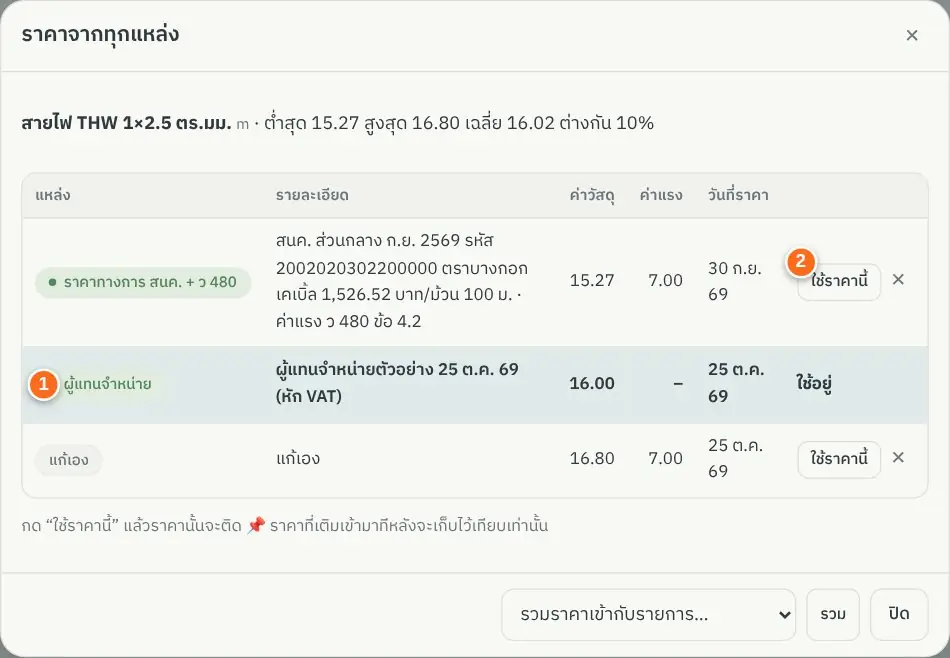
สาย THW 1×2.5 มี 3 ราคา 1 ราคาผู้แทนจำหน่ายที่ใช้อยู่ 2 กด ใช้ราคานี้ ที่แถว สนค. เพื่อกลับไปใช้ราคาทางการ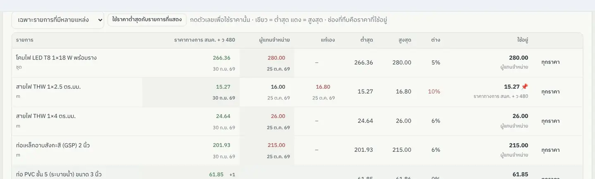
หลังเลือก บรรทัด THW 1×2.5 ใช้ 15.27 📌 ราคาทางการ สนค. + ว 480- ราคาที่เลือกเองติด 📌 ราคาที่เติมเข้ามาภายหลังจะเก็บไว้เทียบเท่านั้น ถ้าต้องการให้ราคาใหม่มาแทนเหมือนเดิม กด ให้ราคาใหม่แทนได้ ในหน้าต่างทุกราคา
- ของชิ้นเดียวกันที่แต่ละแหล่งเรียกชื่อต่างกันจนกลายเป็นสองบรรทัด ใช้ช่อง รวมราคาเข้ากับรายการ… แล้วกด รวม ด้านล่างหน้าต่าง
- ราคาที่ไม่ต้องการแล้วกด × ที่แถวนั้น
ทำราคากลาง ปร.4 ปร.5 ปร.6 จากคลัง
อยู่ที่ฝ่ายธุรกิจประมาณราคาทำราคาประมูลการ์ด ราคาจากคลังราคากลาง
เมื่อมี BOQ ของงานประมูลแล้ว (พิมพ์เอง วางจาก Excel หรือดึงจาก PENUM MEP) โปรแกรมจับคู่แต่ละบรรทัดกับคลังด้วยชื่อ หน่วย และยี่ห้อ แล้วใส่ค่าวัสดุและค่าแรงให้
- 1
เปิดงานประมูลที่ต้องการ (หัวข้อ 5.4)
- 2
เลื่อนลงไปที่การ์ด ราคาจากคลังราคากลาง ตัวเลขด้านบนบอกว่าจับคู่ได้กี่บรรทัด และยอดจะเปลี่ยนเท่าไรถ้าใช้ราคาคลัง
- 3
ตรวจคู่ในช่อง รายการในคลัง (4) ถ้าโปรแกรมเลือกผิด เลือกคู่ใหม่จากช่องนั้น หรือเลือก – ไม่มีในคลัง –
- 4
ติ๊กบรรทัดที่จะใช้ (ติ๊กช่องบนสุดเพื่อเลือกทั้งหมด) แล้วกด ใช้ราคาคลังกับรายการที่เลือก หรือกด ใช้ ทีละบรรทัด
- 5
เลื่อนไปการ์ด ปร.4 ปร.5 ปร.6 และอาคาร แล้วกดพิมพ์ ยี่ห้อของแต่ละบรรทัดจะขึ้นในช่องหมายเหตุของ ปร.4
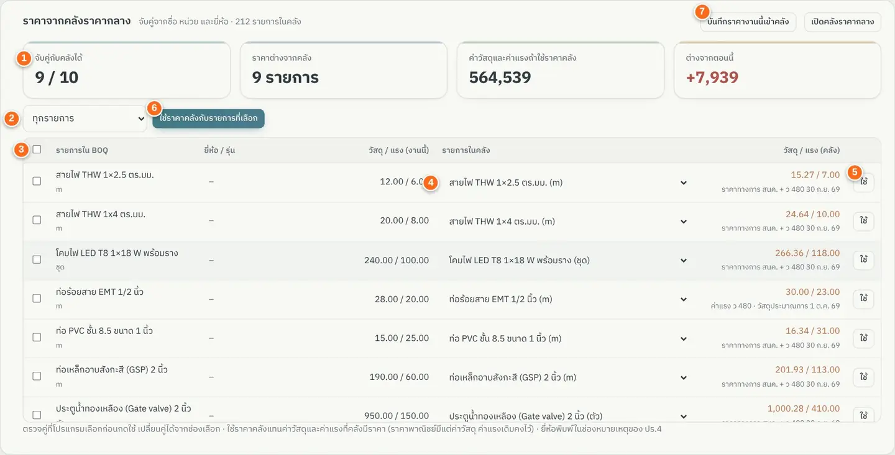
งานตัวอย่าง 10 บรรทัด จับคู่ได้ 9 (สายไฟ 1x4 ที่พิมพ์ x แทน × ก็จับคู่ได้) ตัวเลขสีส้มคือราคาคลังที่ต่างจากราคาในงาน| เลข | ปุ่ม / ช่อง | ใช้ทำอะไร |
|---|
| 1 | ตัวเลขสรุป | จับคู่ได้ · ราคาต่างจากคลัง · ค่าวัสดุและค่าแรงถ้าใช้ราคาคลัง · ต่างจากตอนนี้ |
| 2 | แสดง | เฉพาะที่จับคู่ได้ · เฉพาะที่ราคาต่างจากคลัง · เฉพาะที่ไม่มีในคลัง · ทุกรายการ |
| 3 | ช่องติ๊กบนสุด | เลือกทั้งหมด |
| 4 | รายการในคลัง | คู่ที่โปรแกรมเลือก เปลี่ยนได้ |
| 5 | ใช้ | ใช้ราคาคลังบรรทัดเดียว |
| 6 | ใช้ราคาคลังกับรายการที่เลือก | ใช้ราคาคลังทุกบรรทัดที่ติ๊ก |
| 7 | บันทึกราคางานนี้เข้าคลัง | ส่งราคาของงานนี้กลับเข้าคลัง (ใช้กับบรรทัดที่คลังยังไม่มี) |
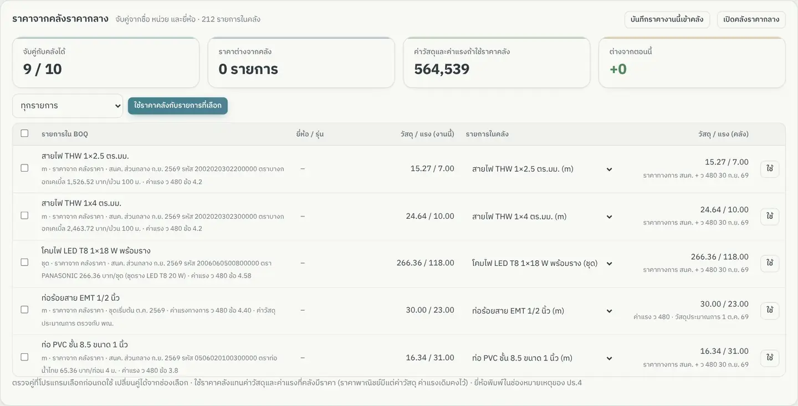
หลังกดใช้ ทุกบรรทัดบอกว่าราคามาจากไหน เช่น คลังราคา · สนค. ส่วนกลาง ก.ย. 2569 รหัส … · ค่าแรง ว 480 ข้อ 4.2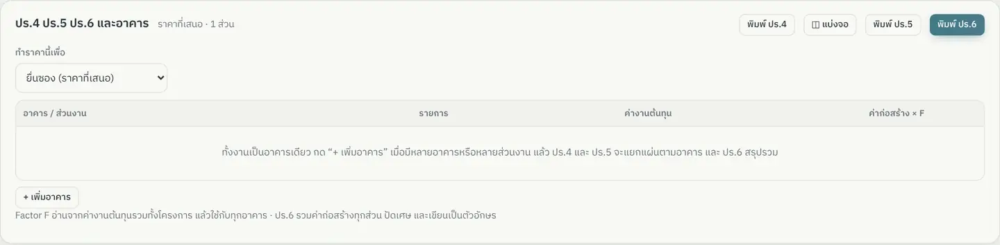
ปุ่ม พิมพ์ ปร.4 · พิมพ์ ปร.5 · พิมพ์ ปร.6 งานหลายอาคารกด + เพิ่มอาคาร แล้ว ปร.4 และ ปร.5 จะแยกแผ่นตามอาคาร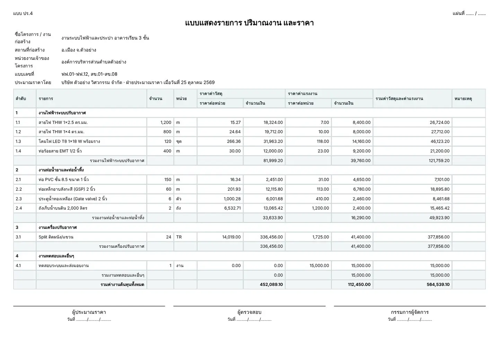
แบบ ปร.4 ที่ได้ ราคาค่าวัสดุและค่าแรงต่อหน่วยมาจากคลัง เช่น สาย THW 1×2.5 = 15.27 + 7.00เคล็ดลับถ้าบรรทัดในคลังมีแต่ค่าวัสดุ (ค่าแรงเป็น 0) ค่าแรงเดิมในงานจะคงไว้ ไม่ถูกเปลี่ยนเป็นศูนย์
ใช้ใน PENUM MEP และ BIM
อยู่ที่PENUM MEP / BIMเมนูคลังราคากลาง
PENUM MEP และ BIM อ่านคลังเดียวกับ PENUM PM ราคาที่ใส่ใน PM ขึ้นใน MEP และ BIM ทันทีในเครื่องเดียวกัน และขึ้นในเครื่องอื่นของบริษัทเมื่อมีรหัสเปิดใช้งาน (หัวข้อ 6.11) บริษัทที่เช่าแค่ MEP หรือ BIM ก็ใช้คลังได้ โดยไม่ต้องมี PM
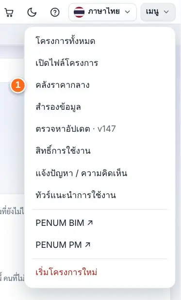
เมนู › คลังราคากลาง (BIM อยู่ที่เดียวกัน)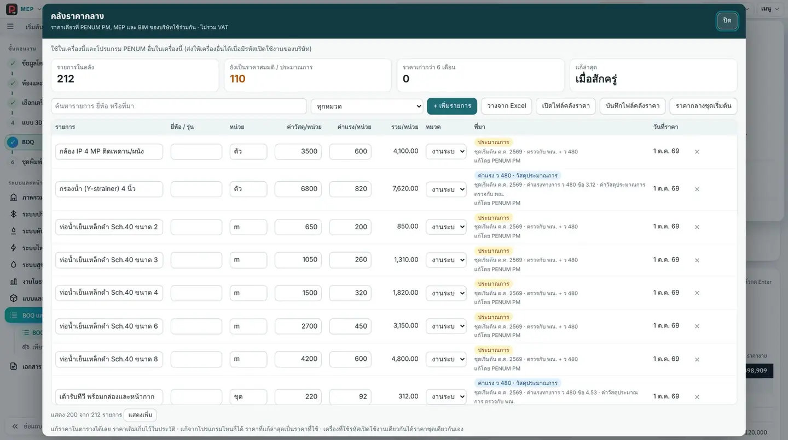
หน้าต่างคลังราคากลางใน MEP แก้ราคาในตารางได้เหมือนใน PM มีปุ่ม วางจาก Excel เปิด/บันทึกไฟล์คลังราคา และ ราคากลางชุดเริ่มต้นBOQ ใน PENUM MEP
- 1
เมนูซ้าย BOQ และราคา › BOQ แล้วเปิดหัวข้อ ตารางราคาต่อหน่วย
- 2
คอลัมน์ขวาสุด คลังราคากลาง (ของ / แรง) แสดงราคาในคลัง ตัวเลขสีส้มคือราคาที่ต่างจากโครงการ กด ใช้ ทีละแถว (– คือคลังยังไม่มีราคาแถวนั้น โครงการใช้ราคาของตัวเอง)
- 3
ใต้ตาราง กด ใช้ราคาจากคลังราคากลาง เพื่อใช้ทุกแถวที่ต่าง หรือ ส่งราคาโครงการนี้เข้าคลัง เพื่อเก็บราคาของโครงการนี้ให้ทั้งบริษัทใช้
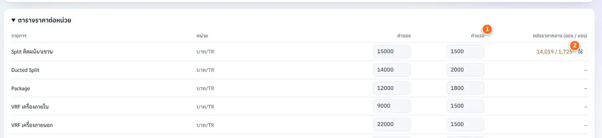
1 คอลัมน์คลังราคากลาง 2 ปุ่ม ใช้ (Split ติดผนัง/แขวน ในคลัง 14,019 / 1,725 บาทต่อ TR จากราคาสำนักงบฯ)1 ใช้ราคาจากคลังราคากลาง 2 ส่งราคาโครงการนี้เข้าคลัง 3 เปิดคลังราคากลางโครงการใหม่ใน MEP เริ่มจากราคาในคลังให้เอง และ PENUM PM ดึง BOQ ของ MEP เข้างานประมูลหรือใบเสนอราคาได้ที่ปุ่ม ดึงจาก PENUM MEP…
BOQ ใน PENUM BIM
- 1
ใน Project Browser เปิด ตารางปริมาณ (Schedules) › ประมาณราคา (BOQ)
- 2
แถบ คลังราคากลาง เหนือตารางมีปุ่มเดียวกับ MEP ปุ่ม ใช้ราคาจากคลังราคากลาง (n) จะกดได้เมื่อมีแถวที่ราคาต่างจากคลัง
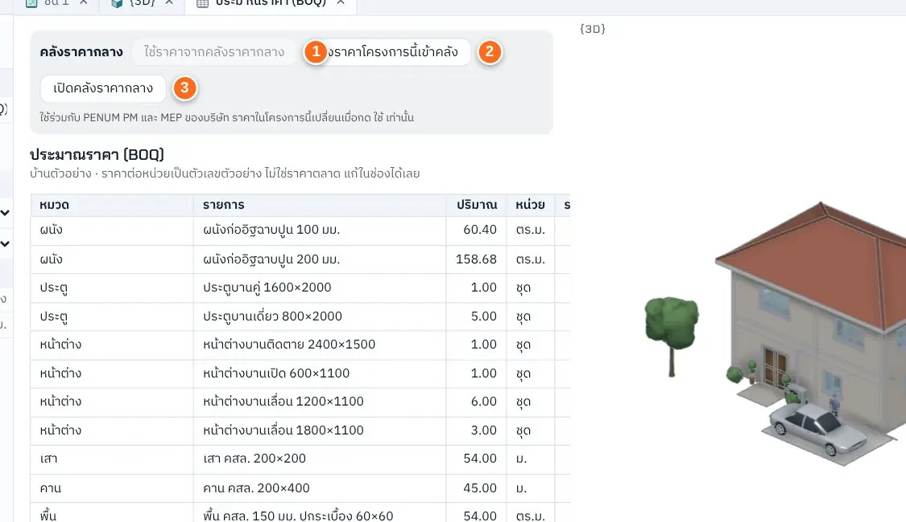
แถบคลังราคากลางใน BIM 1 ใช้ราคาจากคลังราคากลาง 2 ส่งราคาโครงการนี้เข้าคลัง 3 เปิดคลังราคากลางใช้ราคาเดียวกันทั้งบริษัท
อยู่ที่ฝ่ายธุรกิจประมาณราคาคลังราคากลาง
บรรทัดใต้หัวการ์ดคลังราคากลางบอกว่าคลังใช้ร่วมกันได้แค่ไหน
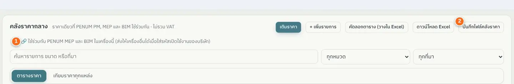
1 สถานะการใช้ร่วมกัน 2 บันทึกไฟล์คลังราคา| ข้อความ | หมายความว่า |
|---|
| ใช้ร่วมกับ PENUM MEP และ BIM ทุกเครื่องของบริษัท | ใส่รหัสเปิดใช้งานของบริษัทแล้ว ทุกเครื่องที่ใช้รหัสเดียวกันได้ราคาชุดเดียวกันเอง ภายในไม่กี่นาที |
| ใช้ร่วมกับ PENUM MEP และ BIM ในเครื่องนี้ | ยังไม่มีรหัส ใช้ร่วมกันได้เฉพาะในเครื่องนี้ ส่งไปเครื่องอื่นด้วยไฟล์คลังราคา |
| ต่ออินเทอร์เน็ตไม่ได้ ใช้คลังในเครื่องนี้ไปก่อน | ทำงานต่อได้ตามปกติ เมื่อต่อได้จะอัปเดตเอง หรือกด อัปเดตตอนนี้ |
- แก้ที่ไหนก็ได้ แก้ราคาใน PM, MEP หรือ BIM เครื่องไหนก็ได้ ราคาที่แก้ล่าสุดเป็นราคาที่ใช้ ราคาที่ถูกแทนเก็บไว้ในประวัติ
- ข้อมูลเข้ารหัส คลังของบริษัทเก็บบนคลาวด์แบบเข้ารหัสด้วยกุญแจของบริษัท บริษัทอื่นอ่านไม่ได้
- ไฟล์คลังราคา กด บันทึกไฟล์คลังราคา ได้ไฟล์ PENUM-prices-วันที่.json ใช้สำรอง ส่งให้บริษัทในเครือ หรือเปิดในเครื่องที่ไม่มีรหัส ด้วย เติมราคา › ไฟล์คลังราคา › เปิดไฟล์ ราคาที่ใหม่กว่าจะแทนราคาเดิม
รู้ไว้ภาพในบทนี้ใช้บริษัทตัวอย่าง ราคาผู้แทนจำหน่ายในหัวข้อ 6.6–6.7 เป็นตัวเลขสมมติ ส่วนราคา สนค. ว 480 และสำนักงบประมาณเป็นราคาจริงตามแหล่ง